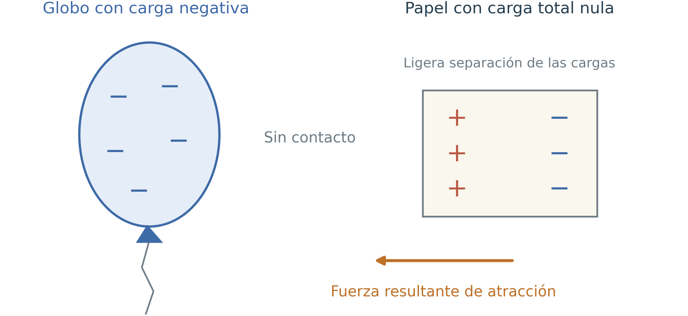
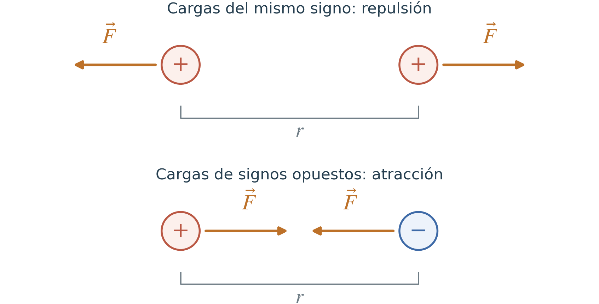
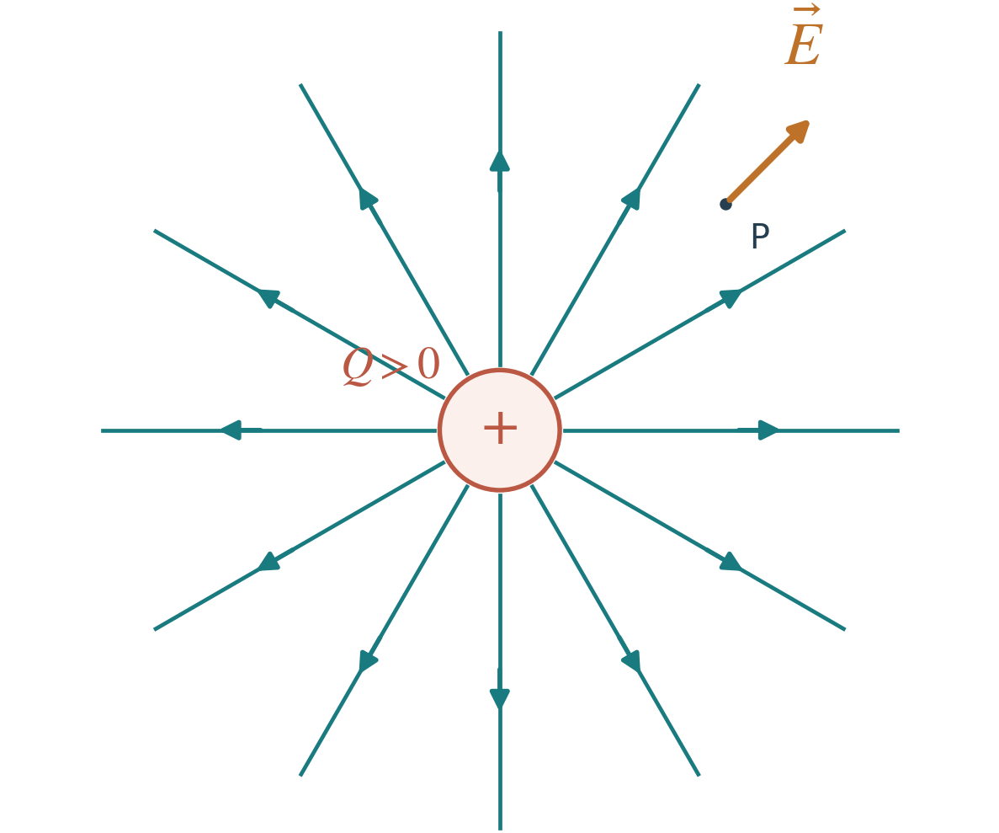
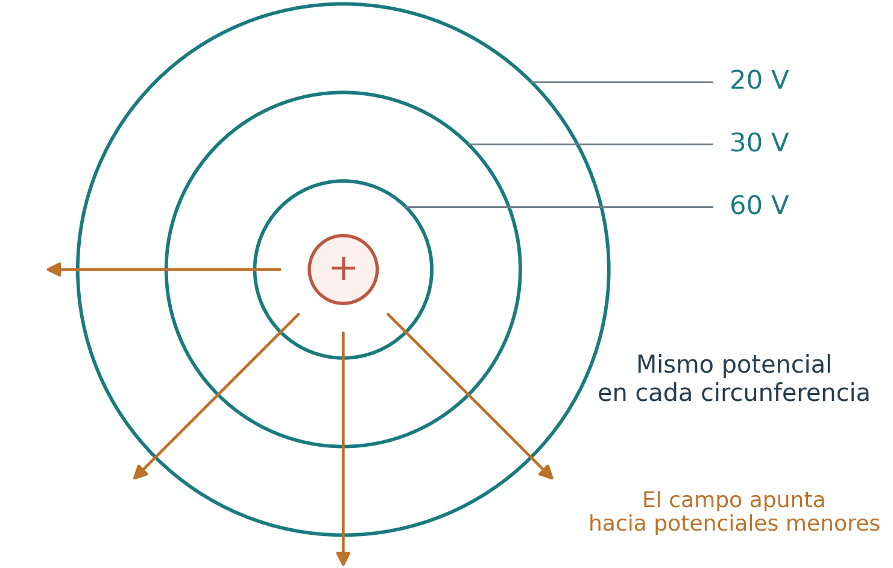
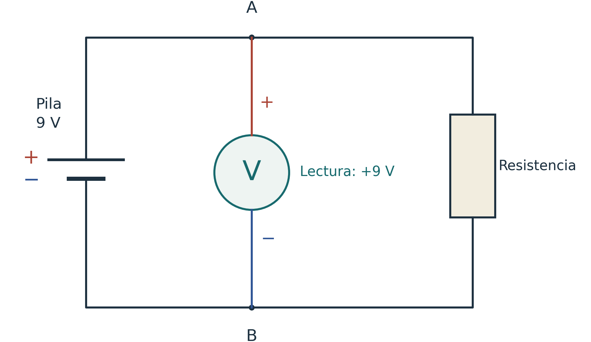
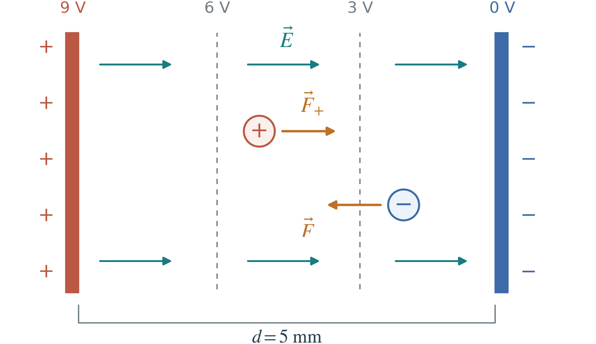
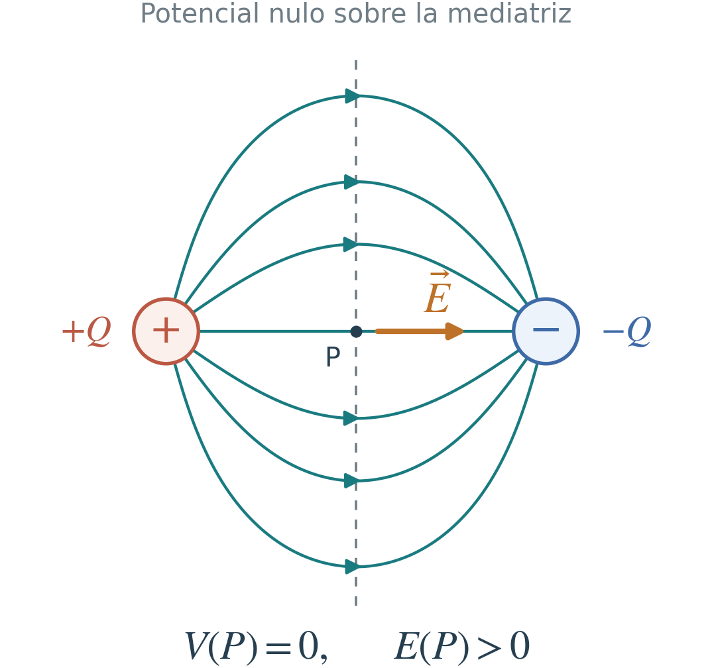

Física
Electrostática: de las cargas al voltaje
Fuerza, campo y potencial para comprender desde un globo que atrae papel hasta la energía que entrega una pila.
La atracción de pequeños papeles por un globo y el funcionamiento de una pila parecen fenómenos distantes, pero comparten una base física. Las cargas eléctricas interactúan mediante fuerzas que podemos describir con un campo; su disposición también determina una energía potencial. El potencial eléctrico expresa esa energía por unidad de carga y permite comprender el significado del voltaje. Desarrollaremos estas ideas de manera gradual, con unas pocas ecuaciones, ilustraciones y ejemplos relacionados con situaciones cotidianas. Distinguir qué le ocurre a una carga, qué propiedad tiene el espacio que la rodea y qué energía puede intercambiar ayuda a interpretar muchos dispositivos eléctricos.
Una atracción que comienza en la materia
Después de frotar un globo con el cabello, es posible acercarlo a unos trozos pequeños de papel y observar que se levantan hacia él. El globo no necesita tocarlos para atraerlos. Algo parecido ocurre cuando un peine recién utilizado atrae cabellos o cuando una prenda se adhiere a otra al separarlas. Estos fenómenos son una buena entrada a la electrostática, el estudio de las cargas eléctricas en reposo y de sus interacciones. En la práctica, también permite describir situaciones que cambian con suficiente lentitud para tratarlas como una sucesión de estados de equilibrio.
La carga eléctrica es una propiedad de la materia que interviene en la interacción electromagnética. Existen dos signos, positivo y negativo. En los átomos, los protones tienen carga positiva y los electrones negativa, de igual magnitud individual. Un cuerpo es eléctricamente neutro cuando sus cargas positivas y negativas se compensan; esto no significa que carezca de partículas cargadas.
La carga se mide en coulombs, cuyo símbolo es C. La magnitud de la carga de un electrón es aproximadamente $1.602\times10^{-19}$ C. Se trata de una cantidad muy pequeña, por lo que incluso un objeto con una carga neta modesta puede presentar un desequilibrio de muchísimos electrones.
Al poner en contacto y separar ciertos materiales inicialmente neutros, el frotamiento puede favorecer la transferencia de electrones entre sus superficies. El material que gana electrones queda con carga neta negativa y el que los pierde con carga neta positiva. La carga no se crea durante el proceso; se redistribuye. El resultado concreto depende de los materiales y de sus condiciones superficiales.

El papel puede ser atraído aunque inicialmente sea neutro porque el globo modifica ligeramente la distribución de sus cargas. Si el globo es negativo, los electrones del papel se desplazan o se deforman sus distribuciones de manera que la región más cercana queda relativamente positiva. Esta polarización conserva la carga total del papel. Como la atracción sobre la región cercana puede superar la repulsión sobre la más lejana, aparece una fuerza resultante hacia el globo.
La fuerza eléctrica y la ley de Coulomb
Dos cargas del mismo signo se repelen y dos de signos opuestos se atraen. La fuerza eléctrica es una interacción capaz de modificar el movimiento de los cuerpos o de mantenerlos en equilibrio frente a otras fuerzas. Como cualquier fuerza, tiene magnitud, dirección y sentido; por eso se representa mediante un vector y se mide en newtons, N.

Para dos cargas puntuales, es decir, objetos cuyo tamaño puede despreciarse frente a la distancia que los separa, la ley de Coulomb da la magnitud de esa fuerza,
Aquí $q_1$ y $q_2$ son las cargas, $r$ es su separación y $k\approx8.99\times10^9\,\mathrm{N\,m^2/C^2}$ es la constante de Coulomb en el vacío. Para muchos ejemplos sencillos en aire puede usarse aproximadamente el mismo valor. El sentido de atracción o repulsión se determina con los signos de las cargas.
La ecuación permite reconocer dos efectos sin hacer cálculos complicados. Duplicar una de las cargas duplica la fuerza, mientras que duplicar la distancia la reduce a la cuarta parte. Esta dependencia con la distancia ayuda a entender la atracción del papel polarizado. Para cuerpos extensos o rodeados de otros materiales, hay que considerar cómo se distribuye la carga y cómo responde el medio.
La acción sobre partículas cargadas se aprovecha en impresoras láser y fotocopiadoras, donde campos eléctricos permiten distribuir y transferir el tóner. También se utiliza en la pintura electrostática, que favorece el depósito de partículas cargadas sobre una pieza. Para describir cómo se organiza esta acción en cada lugar conviene introducir el campo eléctrico.
El campo describe lo que encontraría una carga
Una carga modifica las condiciones eléctricas de su entorno. Podemos describir esa influencia sin colocar primero un objeto concreto en cada posición. Para hacerlo se imagina una carga de prueba positiva $q$, suficientemente pequeña para no alterar apreciablemente las cargas que originan la interacción. El campo eléctrico en ese punto se define como la fuerza que experimentaría la carga de prueba, dividida entre su valor,
La flecha sobre una letra indica que es un vector. El campo tiene dirección y sentido, y su unidad es el newton por coulomb, N/C. Un campo de 300 N/C significa que la fuerza por cada coulomb de carga positiva sería de 300 N. No es necesario introducir realmente un coulomb, una cantidad muy grande para muchos experimentos; la definición expresa una proporción.
Por ejemplo, una carga de $+2\,\mu\mathrm{C}$ en ese campo experimentaría una fuerza de $6\times10^{-4}$ N en el sentido de $\vec{E}$. El prefijo micro, $\mu$, significa una millonésima parte. Si la carga fuera $-2\,\mu\mathrm{C}$, la fuerza tendría la misma magnitud, pero sentido contrario. El campo creado por las fuentes no cambia por elegir el signo de una carga de prueba ideal.

Las líneas de campo son una representación gráfica. Su dirección local indica la del campo y sus flechas señalan el sentido. Salen de las cargas positivas y llegan a las negativas, o se prolongan hacia regiones lejanas. No son hilos materiales ni trayectorias obligatorias de las partículas, cuyo movimiento también depende de su velocidad inicial y de otras fuerzas.
Para una carga puntual fuente $Q$, la magnitud del campo a distancia $r$ es
El campo depende de la fuente y del lugar considerado, mientras que la fuerza depende además de la carga que se coloca allí. Si existen varias fuentes, sus campos se suman vectorialmente, teniendo en cuenta sus direcciones. Esta superposición permite diseñar distribuciones de campo para orientar gotas, separar partículas o recoger polvo cargado en un precipitador electrostático.
Del movimiento a la energía potencial
La fuerza permite estudiar hacia dónde se acelera una carga. Para comprender cuánta energía puede intercambiar durante un desplazamiento, resulta útil otra perspectiva. Una piedra elevada puede aumentar su rapidez al caer porque disminuye su energía potencial gravitatoria. De forma semejante, la disposición de las cargas tiene asociada una energía potencial eléctrica, que representaremos por $U$ y mediremos en joules, J.
Si se acerca una carga positiva a otra positiva que permanece fija, hay que actuar contra la repulsión. Al moverla lentamente, sin cambiar de manera apreciable su energía cinética, el trabajo externo aumenta la energía potencial del sistema. Si después se libera y solo actúa la fuerza eléctrica, la carga puede alejarse y transformar parte de esa energía potencial en energía cinética.
En electrostática, la fuerza eléctrica es conservativa. Esto significa que su trabajo entre dos posiciones depende de los extremos del recorrido, no del camino seguido. Podemos entonces asociar a cada configuración una energía potencial, una vez elegida una referencia. No toda la energía pertenece a una partícula aislada; está vinculada a su interacción con las demás cargas.
El potencial es energía por unidad de carga
La misma posición puede corresponder a energías diferentes si se coloca una carga de prueba mayor o menor. Para describir el entorno independientemente de esa elección se define el potencial eléctrico $V$ como la energía potencial por unidad de carga, con una referencia común,
El potencial es una magnitud escalar, por lo que tiene valor y signo, pero no una dirección. Su unidad es el volt, de símbolo V, equivalente a un joule por coulomb. La letra $V$ en cursiva representa aquí la magnitud física; la V que acompaña a un número indica su unidad.
La analogía con una altura ayuda si se utiliza con cuidado. Una carga positiva tiene más energía potencial en un lugar de mayor potencial eléctrico, del mismo modo que una masa tiene más energía gravitatoria a mayor altura. Para una carga negativa la relación se invierte por el signo de $q$. Además, la altura del paisaje eléctrico es una representación de valores, no una elevación real del espacio.
El valor cero se elige por conveniencia. Para una carga puntual aislada suele tomarse el potencial nulo a una distancia infinitamente grande. Con esta elección,
A diferencia de la fórmula para la magnitud del campo, aquí se conserva el signo de $Q$. Una carga positiva produce potencial positivo y una negativa, potencial negativo, respecto a esa referencia. Para varias cargas, sus potenciales se suman algebraicamente, con sus signos, en lugar de sumar direcciones.

Una superficie equipotencial reúne puntos con el mismo potencial. Al desplazar una carga sobre ella no cambia su energía potencial y la fuerza eléctrica no realiza trabajo neto en ese desplazamiento. Las líneas de campo cruzan las superficies equipotenciales perpendicularmente, en los lugares donde el campo no es nulo. Ambas representaciones describen el mismo entorno desde perspectivas distintas.
La diferencia de potencial y el significado del voltaje
En la práctica importa especialmente cuánto cambia el potencial entre dos puntos. La diferencia de potencial, también llamada voltaje o tensión eléctrica, se relaciona con el cambio de energía potencial mediante
El símbolo $\Delta$ indica valor final menos valor inicial. Si una carga de $+2\,\mu\mathrm{C}$ pasa de un punto A a 9 V a otro B a 3 V, entonces $\Delta V=-6$ V y $\Delta U=-12\,\mu\mathrm{J}$. La disminución de energía potencial puede convertirse en energía cinética o transferirse a otros elementos, según el sistema.
El trabajo que realiza el campo eléctrico sobre la carga tiene el signo contrario al cambio de energía potencial,
En el ejemplo, el campo realiza un trabajo de $+12\,\mu\mathrm{J}$. Con una carga negativa del mismo valor absoluto y el mismo desplazamiento, los signos de $\Delta U$ y del trabajo se invertirían. Esto explica por qué una carga positiva inicialmente en reposo tiende a acelerarse hacia potenciales menores, mientras una negativa tiende a hacerlo hacia potenciales mayores, si solo actúa la fuerza eléctrica.
Cambiar la referencia suma la misma constante a los potenciales de ambos puntos, de modo que su diferencia permanece igual. Dos personas pueden asignar valores distintos a $V_A$ y $V_B$ y aun así calcular el mismo voltaje, las mismas fuerzas y los mismos cambios de energía. Por eso un valor de potencial necesita una referencia, aunque a veces se deje implícita.
Una pila y dos puntas de medición
Cuando una pila se identifica como de 9 V, se indica aproximadamente una diferencia de potencial entre sus terminales en ciertas condiciones de funcionamiento. Esto corresponde a 9 J de energía por cada coulomb transferido entre ellos. No significa que cada electrón posea 9 J ni que la pila contenga nueve unidades de carga.
Los procesos químicos de la pila mantienen una separación de carga y suministran energía al circuito. Al conectar un receptor mediante un camino conductor cerrado, se establece una distribución de campo que favorece el movimiento de las cargas. En una resistencia, esa energía se transfiere principalmente como calor. Las cargas no se consumen en el receptor; la pila transforma energía química y el circuito la entrega a otros procesos.

Un voltímetro necesita dos conexiones porque mide una diferencia. Habitualmente muestra el potencial de la punta roja menos el de la punta negra. En la figura 5 indicaría $+9$ V; al invertirlas, mostraría $-9$ V. Esto es compatible con nuestra definición de cambio de A hacia B, $V_B-V_A$, que en ese recorrido sería $-9$ V. El signo depende del orden de comparación.
La corriente eléctrica expresa cuánta carga atraviesa una sección por unidad de tiempo. Es una magnitud distinta del voltaje. Puede existir diferencia de potencial con el circuito abierto y sin una corriente sostenida; al cerrar el circuito, la corriente también depende de sus propiedades. Aunque un circuito en funcionamiento no sea una colección de cargas inmóviles, los conceptos de campo y potencial siguen siendo útiles cuando las condiciones son estacionarias y los efectos de inducción pueden despreciarse.
Un mismo voltaje puede producir campos diferentes
El campo está relacionado con la rapidez con que cambia el potencial al desplazarnos por el espacio. Entre dos placas metálicas paralelas, grandes frente a su separación, el campo en la región central es aproximadamente uniforme. Si $d$ es la distancia entre ellas,
Con 9 V y una separación de 5 mm, el campo ideal es $E=9/0.005=1800$ V/m. Esta unidad es equivalente al N/C. Si la separación se reduce a la mitad manteniendo los 9 V, el campo se duplica. El voltaje por sí solo no determina la intensidad del campo; también importa la geometría.

En general, en electrostática el campo apunta en la dirección en que el potencial disminuye más rápidamente. Por eso las flechas del campo y el movimiento inicial de una carga positiva son compatibles con la pérdida de energía potencial. La carga negativa recibe la fuerza contraria, como muestra la figura 6.
Dos conductores separados por un material aislante forman la estructura básica de un condensador, que puede mantener cargas separadas y almacenar energía en el campo eléctrico. Las pantallas táctiles capacitivas detectan cambios en el acoplamiento eléctrico que produce la proximidad de un dedo. Su electrónica utiliza esos cambios para determinar la posición del contacto.
La geometría también influye en las descargas. Cerca de una punta conductora el campo puede ser muy intenso. Si las condiciones permiten ionizar el aire, este deja de comportarse como un buen aislante y puede producirse una descarga. La pequeña chispa que a veces aparece al tocar un objeto metálico después de caminar sobre una alfombra es una manifestación cotidiana de ese intercambio de carga.
Potencial nulo no significa campo nulo
Como el potencial y el campo describen aspectos diferentes, el valor de uno no se deduce simplemente del valor del otro en un punto. Consideremos dos cargas puntuales de igual magnitud y signos opuestos, un sistema llamado dipolo eléctrico. Tomando el potencial nulo en el infinito, sus contribuciones al potencial se cancelan en el punto medio porque tienen igual magnitud y signo contrario.

El campo en P, en cambio, no se cancela. El de la carga positiva apunta alejándose de ella y el de la negativa apunta hacia esta última, de modo que ambos señalan hacia la derecha. Una carga colocada en P puede recibir una fuerza aunque allí el potencial sea cero.
También conviene distinguir el potencial nulo de un potencial constante en toda una región. En el interior del material de un conductor en equilibrio electrostático, el campo es nulo y el potencial es constante, aunque su valor no tiene por qué ser cero. La redistribución de las cargas en conductores permite el blindaje electrostático de instrumentos; para interpretar su eficacia hay que considerar también las aberturas y las condiciones reales del montaje.
Cuatro conceptos para interpretar una misma situación
La fuerza describe la acción sobre una carga concreta; el campo permite anticipar esa acción en cada lugar. La energía potencial relaciona la configuración con el trabajo que puede realizar la interacción. Al dividirla entre la carga se obtiene el potencial, y al comparar dos puntos aparece la diferencia de potencial. La tabla reúne sus unidades y significados.
Para explorar estas relaciones se puede utilizar la simulación Cargas y campos, de PhET. Al colocar una carga positiva y observar el campo y las equipotenciales aparecen los patrones de las figuras 3 y 4. Al añadir una carga negativa de igual magnitud se puede buscar la región de potencial nulo y comprobar que allí persiste un campo. Comparar ambas representaciones ayuda a distinguir un mapa de fuerzas posibles de un mapa de energía por unidad de carga.
Referencias
- PhET Interactive Simulations. (2026). Cargas y campos [Simulación interactiva]. University of Colorado Boulder.
- Urone, P. P., & Hinrichs, R. (2022). College physics (2.ª ed., caps. 18–19). OpenStax.